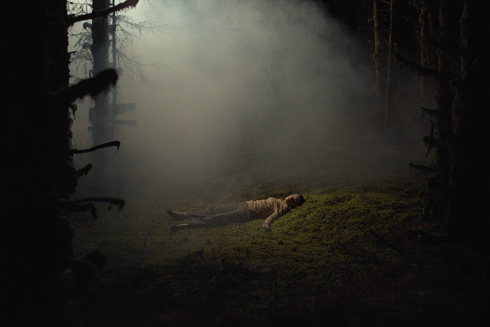

You slowly walk over to your groupmates bag careful not to make any noise. You shift around finding a water bottle, and canned fruit.
You continue looking and right as your about to get up, they jolt awake and ask what your doing. You hide the contents behind you back but its
no use. The grab your arm, relasing the contents and they notice your bite.
The Group exiles you to the woods, where you die alone.